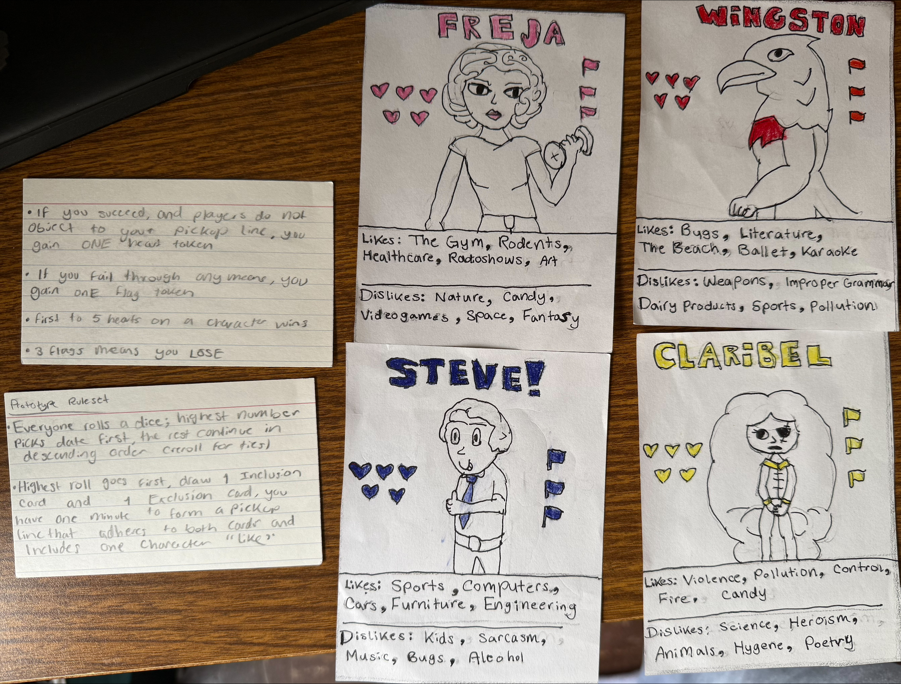
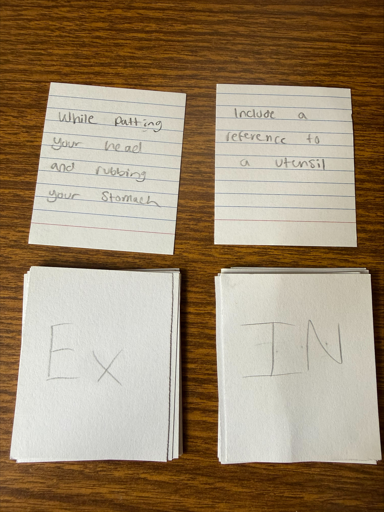

Prototype Photos

Character cards and basic rule cards.

Heart and flag tokens used to track success and failure.

Inclusion and exclusion cards used to guide each pickup line.
This game is a humorous character-matching prototype where players create pickup lines based on each character’s likes and dislikes. Players use inclusion and exclusion cards to decide what their pickup line must include or avoid. The goal is to earn hearts while avoiding flags.
Place the character cards where all players can see them. Separate the heart tokens and flag tokens into piles. Shuffle the inclusion and exclusion cards into two decks. Each player rolls a die, and the highest roll goes first.
On each turn, a player draws one inclusion card and one exclusion card. The player has one minute to make a pickup line for one of the characters. The pickup line should include something the character likes and avoid the topic on the exclusion card.
If the pickup line succeeds and the other players do not object, the player gains one heart token. If the pickup line fails, the player gains one flag token. The first player to earn five hearts wins. A player loses if they collect three flags.

Character cards and basic rule cards.
Heart and flag tokens used to track success and failure.

Inclusion and exclusion cards used to guide each pickup line.
Our prototype is designed around humor, creativity, and social judgment. The different character likes and dislikes create unique challenges for players. The heart and flag system gives players clear feedback and creates a simple win/loss structure.